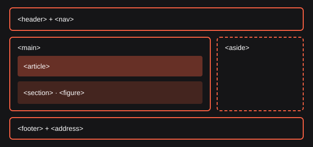

Лабораторна робота №4
Семантична розмітка HTML5: навіщо вона потрібна
Ця сторінка — покращена версія з лабораторної роботи №4. Вміст той самий, що й у початковій версії, але розмітка описує його структуру: браузер, пошукові системи та екранні зчитувачі бачать, де навігація, основний вміст і додаткова інформація.
Що таке семантика
Семантичні елементи описують значення вмісту, а не лише його вигляд. Наприклад, елемент <nav> позначає навігацію, а <main> — основний вміст сторінки. Користувачі екранних зчитувачів можуть переходити між такими ділянками (landmarks) однією командою.
Основні елементи
header— шапка сторінки або розділу;nav— блок навігації;main— основний вміст;articleіsection— самостійні та тематичні блоки;aside— додаткова інформація;footer— підвал.

Порівняння версій
<div class="title">Заголовок</div>
<div class="menu"><span>Головна</span></div><h1>Заголовок</h1>
<nav aria-label="Головна"><a href="/">Головна</a></nav>Часті питання
Чи впливає семантика на SEO?
Так, пошукові системи краще розуміють структуру сторінки та пріоритет її частин.
Чи потрібен ARIA, якщо є семантика?
Спочатку використовують нативні елементи, а ARIA додають лише там, де їх недостатньо.
Скільки елементів main може бути на сторінці?
Рівно один видимий елемент main, усередині якого заголовки йдуть у логічному порядку.